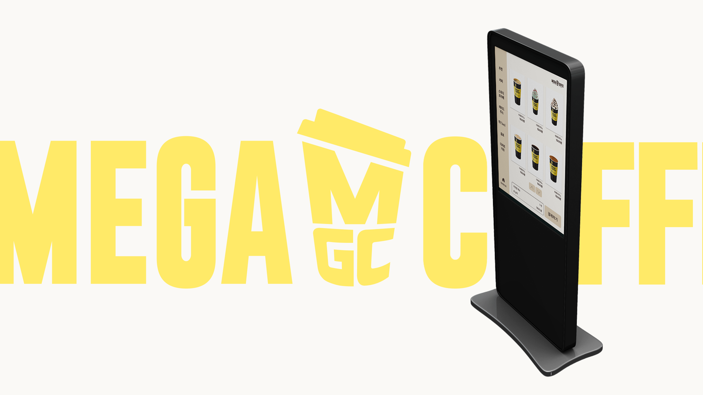
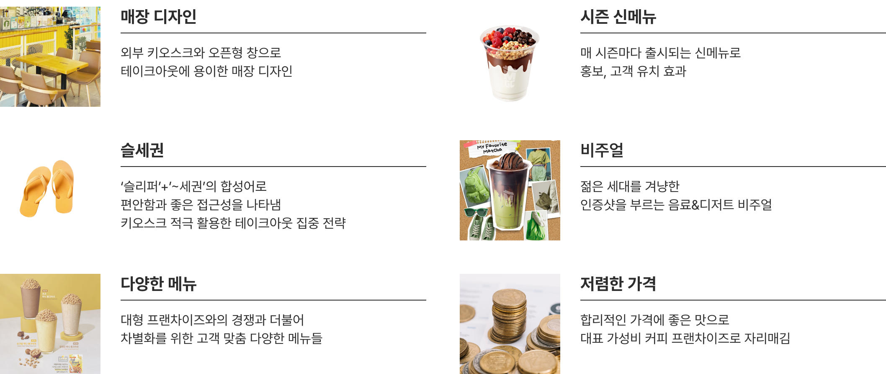
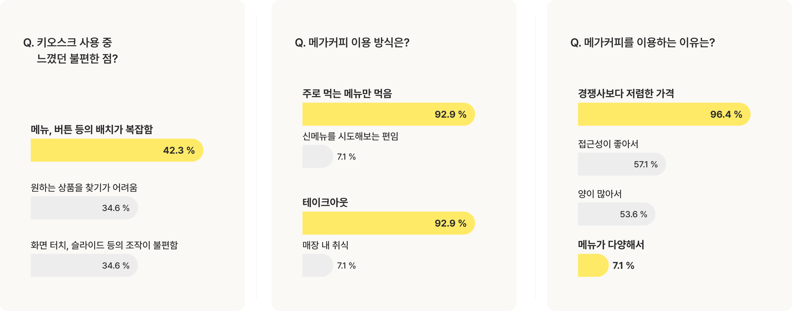
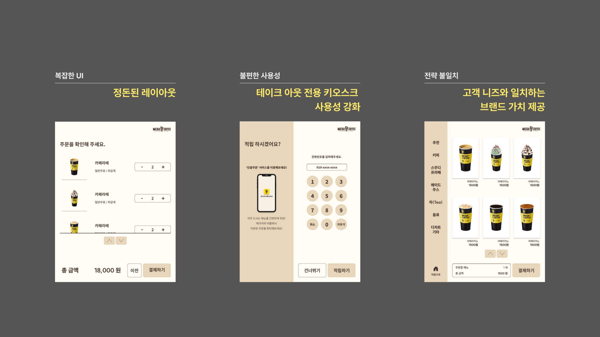
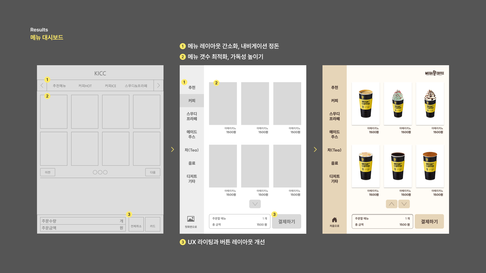
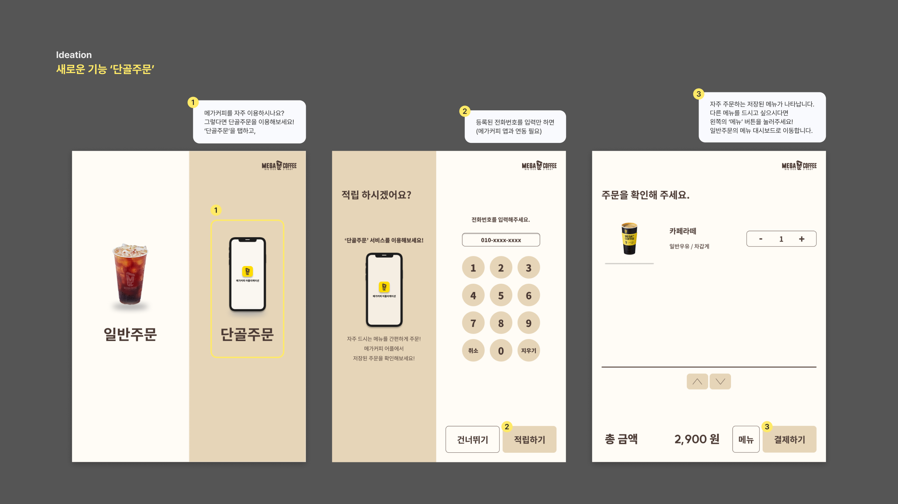
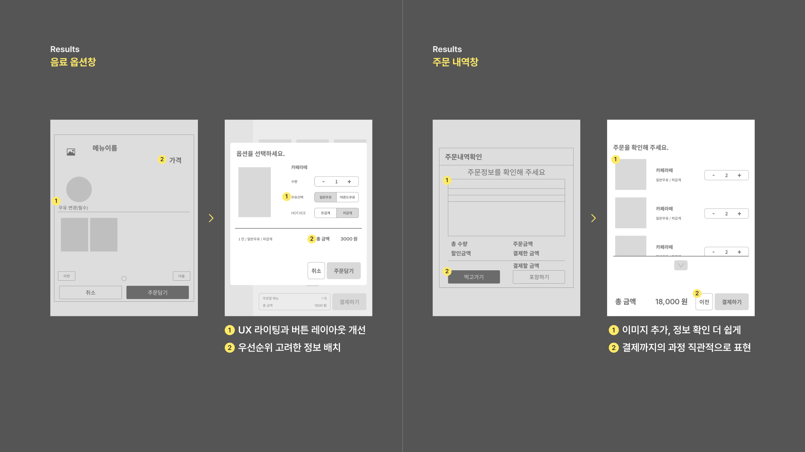
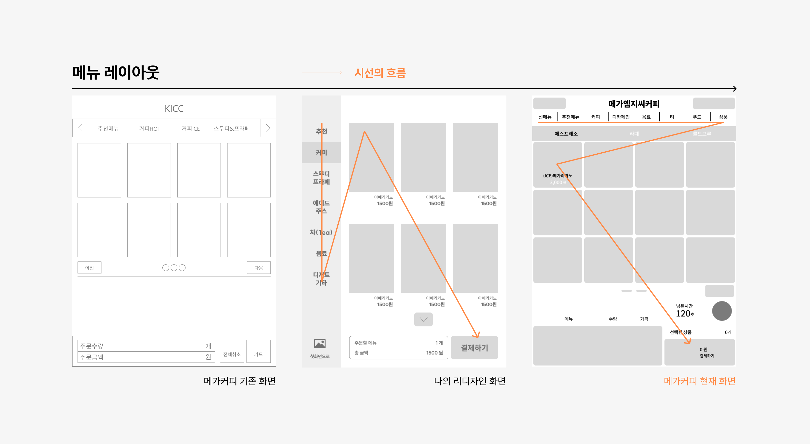
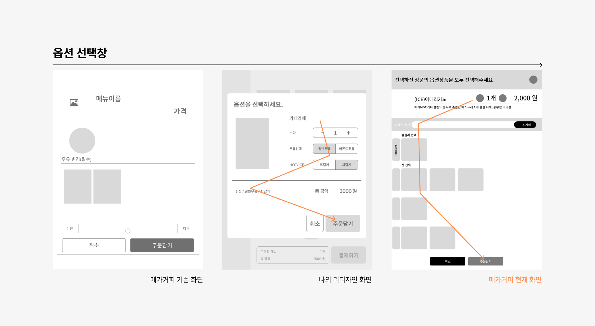

UXUI
메가커피 키오스크 리디자인
메가커피 키오스크 UI를 리디자인하고,
브랜드 전략과 가치에 걸맞는 기능을 추가 기획해 디자인 해보았습니다.
2022.11 - 12
개인 프로젝트

Background
많은 사람들의 사랑을 받고 있는 테이크아웃 커피 브랜드, ‘메가커피’.
하지만 음료와 디저트의 뛰어난 맛과 합리적인 가격을 선보이기도 전에 메뉴를 고를 때부터 불편함을 느끼게 하는 ‘키오스크’.
실제 소비자들의 경험을 녹여내 불편하고 복잡한 메가커피 키오스크 UI를 개선하고 메가커피만의 강점과 운영전략을 살려 새로운 기능 ‘단골주문’을 함께 디자인했습니다.
Research
메가커피가 추구하는 브랜드 가치를 조사하고, 그 가치들이 키오스크의 UIUX에 잘 드러나는지를 알아보았습니다.

실제로 메가커피를 자주 이용하는 고객들의 이야기를 들어보고자 했습니다.
테이크아웃용 외부 키오스크에 대한 사용성을 높이기 위한 프로젝트이므로, 메가커피의 이용행태와 브랜드 인식 등을 조사하며 실제 이용객이 느끼는 사용성에 대해 파악했습니다.
그 결과 메가커피가 추구하는 브랜드가치와 실제 사용자가 키오스크 이용을 통해 느끼는 가치가 일치하지 않았고, 불편함을 느끼는 이용객도 있었습니다. 이를 해결하고자 했습니다.

Problem & Solution
전체적으로 키오스크의 레이아웃을 정돈하고, 브랜드 가치와 일치하는 사용경험을 제공하기 위한 기획을 넣었습니다.

1. 기존의 화면에서는 메뉴 내비게이션을 옆으로 넘기며 전체 메뉴 카테고리를 파악해야 했습니다.
커피 메뉴를 통합하고, 기타 메뉴를 추가함으로써 간소해지고 정돈된 내비게이션을 한 눈에 볼 수 있게 고려했습니다.
2. 힉의 법칙(Hick’s Law)을 기반으로 메뉴 갯수를 최적화했습니다.
메뉴의 이름과 가격의 정렬을 맞춰 가독성을 높이고, 이미지 크기를 키움으로써 키오스크에 능숙하지 않은 이용자들도 원하는 메뉴를 쉽게 찾을 수 있도록 디자인했습니다.
3. 기존의 ‘카드’ 버튼의 모호한 표현을 ‘결제하기’로 의미를 명확히 전달하고자 했습니다.
또한 메뉴를 고르는 과정에서 모호한 표현과 더불어 취소 버튼이 옆에 있다면 구매 의욕을 떨어뜨릴 수 있음과 동시에 선택지가 늘어남으로써
이용자의 선택에 방해요소라고 판단, 제거한 후 왼쪽 하단의 ‘첫화면으로’ 버튼으로 대체했습니다.

‘메가오더’라는 모바일 원격 주문 서비스가 이미 존재하지만, 테이크 아웃 전용 외부 키오스크의 사용성을 고려한 아이디어입니다.
앞서 시행한 설문조사에서 ‘주로 먹는 메뉴만 주문함’ 항목이 제일 높은 것을 보고 인사이트를 얻었습니다.

1. 기존의 화면에서는 우유 선택을 ‘선택 안함’과 ‘아몬드 밀크’로 안내했습니다. (필수)라고 강제성을 부여함과 동시에 ‘선택 안함’ 선택지가 있는 것이 모순적이라고 판단해
직관적인 탭 버튼으로 변경해 디자인 했습니다.
메뉴 이름, 옵션(정보), 가격 순으로 정보를 배치하고, 결정을 내리기 전(주문담기) 최종확인을 위해 가격 옆에 이용자가 선택한 정보들을 배치했습니다.
텍스트로만 최종 정보를 확인해야 하는 기존의 화면과 달리, 이미지와 함께 수량을 확인, 변경할 수 있는 과정을 추가했습니다.
2. 테이크아웃용 실외 키오스크에 맞춰 혼란을 줄이고, 다음 단계인 ‘결제’를 직관적으로 표현했습니다.

Lesson learn
리디자인 프로젝트를 진행한 후 시간이 많이 흘러, 현재 메가커피의 리뉴얼된 화면과 비교해보는 시간을 가졌습니다.
메뉴 레이아웃에서 큰 변화가 생겼는데, 메가커피의 리뉴얼 화면은 기존 디자인과 시선의 흐름을 동일하게 가져가며 레이아웃 변화에 대한 거부감을 줄일 수 있습니다.
그러나 한 번에 너무 많은 정보를 보게 되고 복잡하다는 느낌을 줄 수도 있겠으나,
브랜드의 핵심 가치인 다양한 메뉴를 최대한 짧은 플로우 내에서 보여줄 수 있다는 이점이 있다고 분석했습니다.

메가커피의 리뉴얼 화면은 세부 선택사항이 너무 많고, 시선의 흐름을 분산시키는 디자인이라고 생각합니다.
CTA(주문담기)까지의 유도 과정이 복잡해 사용자에게 혼란을 줄 수 있다고 분석했습니다.
